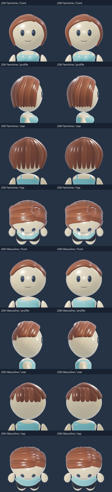
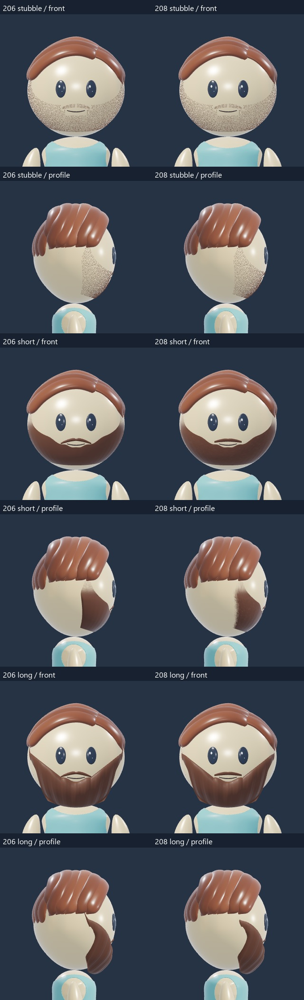
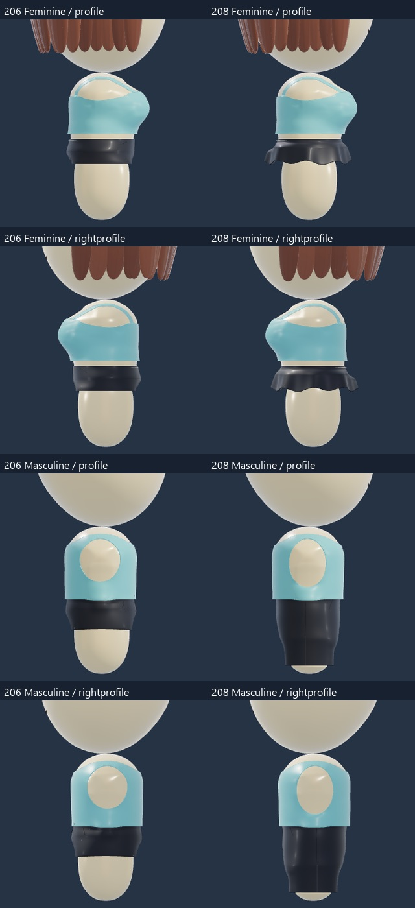
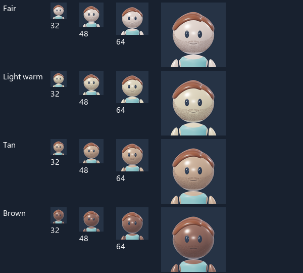
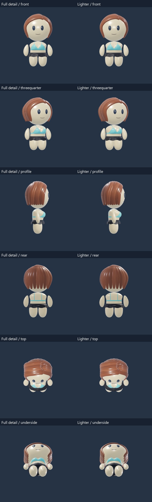
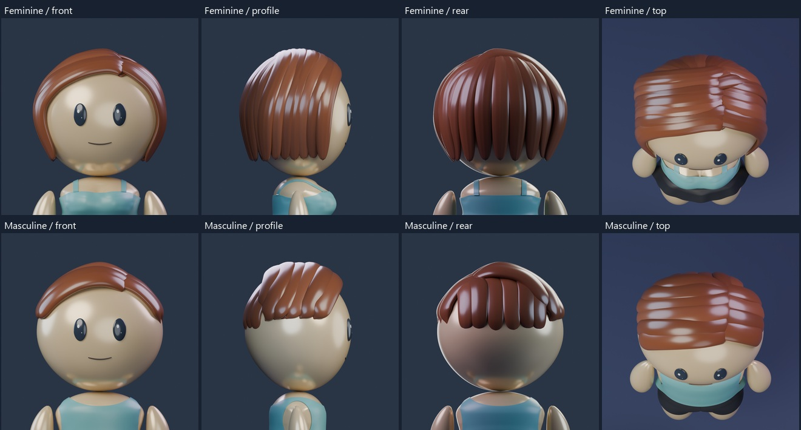
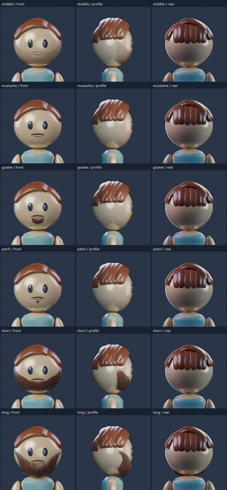
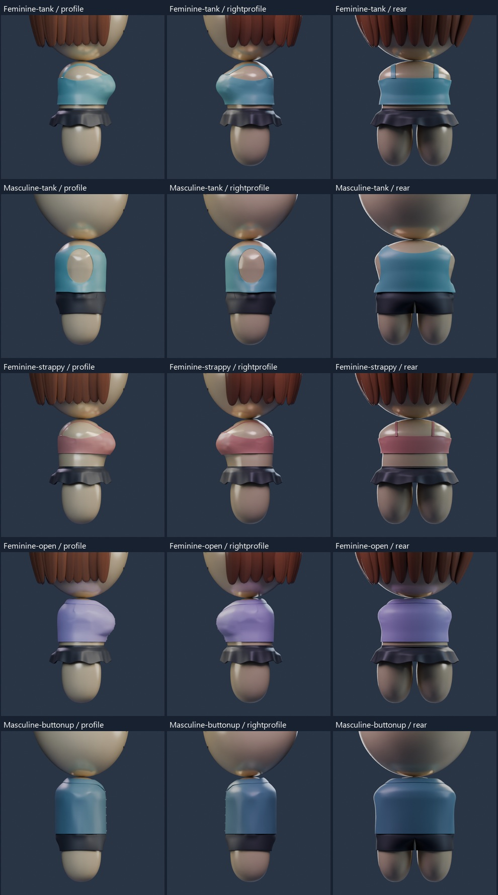

AVATAR REVIEW · 208
Hair, facial hair and fit refinements
A focused cleanup of the current hairstyles, facial hair, tank armholes, collar folds and strap edges. The accepted bodies, floating arms, hoodies, palette and lighting remain. Use Face focus for hair and facial hair, or hide the arms to inspect the garment sides.
 Rendered reference
Rendered referenceRotate, zoom and mix tops with bottoms.
Existing face options
Before 206 and candidate 208: hair

Before and candidate: facial hair

Tank armholes with arms hidden

Stubble at small portrait sizes

Lighter export comparison
The same assembled look is 22.3 MB at full detail and 6.4 MB in this experiment, about a 71% reduction. The head and scalp coverage keep their full detail. These are downloaded model assets, not radio profile bytes. The native authoring meshes remain unchanged. Visual comparison is separate from real-phone performance testing.

Current hairstyles

Facial hair

Hidden garment sides

Scope and recovery
Candidate 208; owner review pending. Recovery is 206. Bodies, heads, eyes, mouth geometry, palette, floating arms, sleeves, bottoms and the accepted hood construction are unchanged. Hair is now a separate component. The lighter export test uses disposable export copies; it does not replace the authoring models. Further hairstyle and accessory integration remains queued.